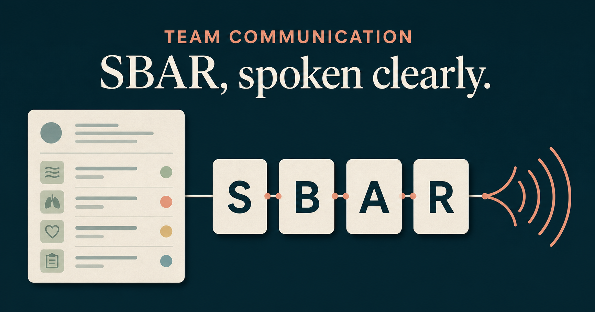

Quick answer
What is an SBAR nursing handoff?
An SBAR nursing handoff organizes a message into Situation, Background, Assessment, and Recommendation. First identify the patient and immediate concern. Add only the history that changes the decision, state what you think is happening, and finish with a specific request and time frame. The receiver should then confirm the plan so both people leave with the same next step.
The communication task
Know who is speaking, why, and what needs to happen
Evening shift on an adult medical unit
Registered nurse caring for the patient
On-call resident who has not yet seen the change
New shortness of breath and a falling oxygen saturation
Activate the local escalation process, obtain an immediate bedside review, and confirm what to monitor while help is on the way
Fictional training scenario: Names, observations, and timings below are invented for language practice. In clinical work, use the actual chart, local escalation policy, and your scope of practice.
Before you call
Read the example chart, then decide what matters
The chart contains more detail than a spoken message needs. Items marked Must say are carried into the generated SBAR example below.
Acute care communication snapshot
Current concern
- Patient
- Mr. Han · 68 years old · Room 412 Must say
- New change
- Breathless at rest; speaking in short phrases Must say
- Oxygen saturation
- 88% on room air; 95% twenty minutes earlier Must say
- Latest observations
- RR 28 · HR 112 · BP 102/64 · Temp 38.6°C Must say
- Mental status
- Alert and answering appropriately
Relevant background
- Reason for admission
- Community-acquired pneumonia; admitted yesterday Must say
- Relevant treatment
- Scheduled antibiotic given at 18:00
- Recorded allergy
- Penicillin allergy documented
Safety and next steps
- Nurse's assessment
- Respiratory status is worsening Must say
- Requested response
- Local escalation process activated; immediate bedside review requested Must say
- Clarify before ending
- Monitoring and escalation plan while waiting Must say
Build the message
Situation, Background, Assessment, Recommendation
SBAR is a four-part framework for organizing a focused conversation about a patient's condition. Use it when the receiver needs the current problem, only the relevant context, your assessment, and a clear request.
What is happening now?
Situation
“This is Mina, the nurse caring for Mr. Han, a 68-year-old in room 412.”
“I'm calling because he has become breathless at rest, and his oxygen saturation has fallen from 95% to 88% on room air in the past 20 minutes.”
Why it works: The receiver immediately hears who is calling, which patient is involved, what changed, and why the call is urgent.
Compare the wording
“I'm calling about a patient who doesn't look good.”
“His oxygen saturation has fallen to 88% on room air.”
A concrete change is easier to interpret than a vague judgment.
Which context changes the decision?
Background
“He was admitted yesterday with community-acquired pneumonia, and his scheduled antibiotic was given at 18:00.”
Why it works: The background is short and relevant to the current respiratory change; it does not become a full chart recital.
Compare the wording
“He has a long medical history, and there are several things in the chart.”
“He was admitted yesterday with community-acquired pneumonia.”
Lead with the piece of history that helps the receiver understand the present concern.
What did you find, and what do you think?
Assessment
“His respiratory rate is 28, heart rate 112, blood pressure 102 over 64, and temperature 38.6 degrees Celsius; he is alert but can speak only in short phrases.”
“I think his respiratory status is worsening.”
Why it works: Objective findings and the caller's interpretation are clearly separated, so the receiver can hear both the evidence and the concern.
Compare the wording
“His vital signs are bad.”
“His respiratory rate is 28, and I think his respiratory status is worsening.”
Report the relevant measurement, then state your assessment directly.
What response do you need, and by when?
Recommendation
“I have activated our unit escalation process. Could you review him at the bedside now?”
“Please confirm what you want me to monitor while the escalation response is on the way.”
Why it works: The request names the action already taken, makes the need for immediate review explicit, and asks for a monitoring plan instead of ending with an open-ended update.
Compare the wording
“I just wanted to let you know.”
“I have activated our escalation process. Could you review him now?”
A specific request makes ownership, urgency, and the expected response easier to confirm.
Complete spoken example
Put the four parts together without sounding robotic
This is Mina, the nurse caring for Mr. Han, a 68-year-old in room 412. I'm calling because he has become breathless at rest, and his oxygen saturation has fallen from 95% to 88% on room air in the past 20 minutes.
He was admitted yesterday with community-acquired pneumonia, and his scheduled antibiotic was given at 18:00.
His respiratory rate is 28, heart rate 112, blood pressure 102 over 64, and temperature 38.6 degrees Celsius; he is alert but can speak only in short phrases. I think his respiratory status is worsening.
I have activated our unit escalation process. Could you review him at the bedside now? Please confirm what you want me to monitor while the escalation response is on the way.
Close the loop
“I'm on my way now. Continue the unit escalation process and repeat his observations in five minutes.”
“To check, you're on your way now. I'll continue the escalation process and repeat his observations in five minutes.”
Why: The sender repeats the action, timing, and contingency so the receiver can correct any misunderstanding before the call ends.
Pre-call checklist
A 20-second SBAR check
- Confirm the correct patient and receiver.
- Name the immediate change in one sentence.
- Have the latest relevant observations in front of you.
- Choose only the background that affects this decision.
- Separate what you observed from what you think.
- Ask for a specific action and time frame.
- Clarify what to do if the condition changes.
- Repeat back the agreed plan and ownership.
Common communication problems
Repair a vague or overloaded handoff
Giving the full chart before naming the concern
Repair: Start with the current change and urgency; add only background that helps the receiver act.
Reporting numbers without an assessment
Repair: After the key findings, say plainly what you think is happening or what concerns you.
Ending with “Just letting you know”
Repair: Ask for an action, state a time frame, and clarify the contingency plan.
Assuming silence means agreement
Repair: Use a check-back to confirm the action, timing, trigger, and owner.
Frequently asked questions
SBAR questions, answered briefly
What does SBAR stand for in nursing?
SBAR stands for Situation, Background, Assessment, and Recommendation. The sequence helps a nurse move from the current problem to relevant context, findings and interpretation, and a specific request or proposed next step.
How long should an SBAR handoff be?
There is no universal time limit. It should be brief enough to foreground the concern but complete enough to support the next decision. Urgent calls often begin with a short headline, then expand as the receiver asks questions.
Is SBAR only for nurses calling doctors?
No. SBAR can structure communication between different healthcare team members and across care settings. Roles and local workflow vary, so the wording and expected response should match the people involved and the situation.
What belongs in the Recommendation section?
State what you need the receiver to do, how urgent it is, and what should happen if the situation changes. A recommendation can be a request for review, an action, clarification, or agreement on a monitoring and escalation plan.
What is the difference between SBAR and a check-back?
SBAR organizes the message the sender gives. A check-back closes the loop after the response: the receiver states the plan, the sender repeats the critical details, and the receiver has an opportunity to verify or correct them.
Free · No card · No account
Build clinical English you can say under pressure
Bedside English is designed for spoken clinical communication practice. Team scenarios are an expanding part of this learning library.

Editorial record
Sources and review boundary
This guide was drafted with a structured content template and checked against the authoritative sources below. It teaches English and message organization; it does not replace local policy, supervision, or clinical judgment.
- SBAR Tool: Situation-Background-Assessment-RecommendationInstitute for Healthcare Improvement · Accessed 2026-08-24
- TeamSTEPPS ToolsAgency for Healthcare Research and Quality · Accessed 2026-08-24
- Implement Teamwork and Communication: SBAR and Check-BackAgency for Healthcare Research and Quality · Accessed 2026-08-24
Published: · Last source and language review: